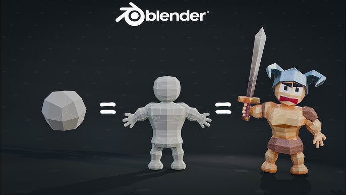

Усе починається з задуму. На цьому етапі формується образ майбутньої ігрової моделі, її призначення у грі та роль у загальному світі. Визначається, чи це буде головний персонаж, ворог, нейтральний NPC, предмет або елемент оточення. Продумується характер, настрій, стиль, епоха, до якої належить об’єкт, а також те, які емоції він має викликати у гравця. Часто створюються концепт-арти, ескізи або мудборди, що допомагають візуалізувати ідею та зафіксувати ключові риси. На цьому ж етапі враховуються технічні обмеження рушія і платформи, щоб майбутня модель відповідала вимогам продуктивності. Добре пропрацьована ідея значно спрощує всі наступні кроки й зменшує кількість правок у процесі.
Після затвердження концепції починається створення базової 3D-моделі. Формується основна геометрія з простих об’ємів, задаються пропорції, поза та загальний силует. Головне завдання — отримати правильну форму, яка добре читається навіть без деталей. Далі модель проходить етап деталізації, де за допомогою скульптингу додаються м’язи, складки одягу, елементи обладунку, тріщини, орнаменти та інші особливості поверхні. Після цього створюється оптимізована ігрова сітка з меншою кількістю полігонів, виконується UV-розгортка та запікання карт із високодеталізованої версії. Завершується етап текстуруванням і налаштуванням матеріалів, де додаються кольори, зношеність, бруд, блиск і реакція на світло. У результаті модель отримує фінальний вигляд, готовий до використання в реальному часі.
На цьому етапі модель переходить від статичного об’єкта до основи для анімації. Усередині створюється скелет із кісток, який визначає, як саме модель може рухатися. Налаштовується ієрархія кісток і їх розташування відповідно до анатомії або конструкції об’єкта. Сітка прив’язується до скелета так, щоб під час руху деформації виглядали природно, без заломів і розтягувань. За потреби додаються допоміжні системи для волосся, одягу чи аксесуарів, а також елементи інверсної кінематики для більш реалістичних поз. Цей етап є критично важливим, адже від якості риггінгу залежить, наскільки добре модель поводитиметься в анімаціях і під час взаємодії з грою.
Після підготовки скелета створюються анімації, які задають поведінку моделі: рухи, жести, атаки, реакції, цикли ходьби чи бігу, а також унікальні дії, пов’язані з геймплеєм. Анімації мають відповідати характеру та «вазі» об’єкта, щоб рухи виглядали переконливо. Далі модель разом зі скелетом і анімаціями імпортується в ігровий рушій, де налаштовуються матеріали, масштаби, орієнтація та відображення. Додаються колізії, точки взаємодії та зв’язок зі скриптами, щоб модель могла реагувати на дії гравця, команди та вплив оточення. На завершення проводиться оптимізація й тестування в ігрових сценах, перевіряється стабільність роботи та коректність анімацій. У результаті модель стає повноцінною частиною ігрового світу, готовою до використання в проєкті. Це стосуються всього в грі навіть перемикання важілю потребує всіх цих кроків.